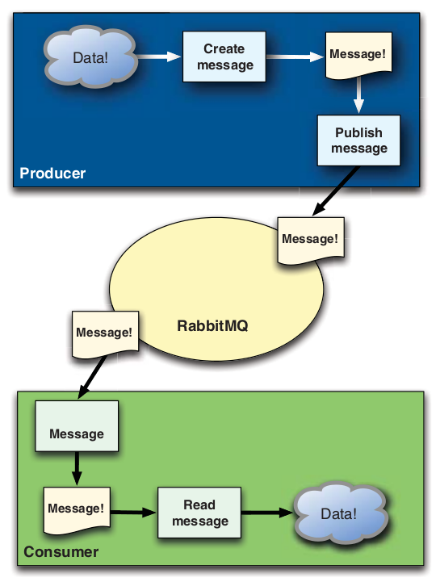
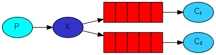
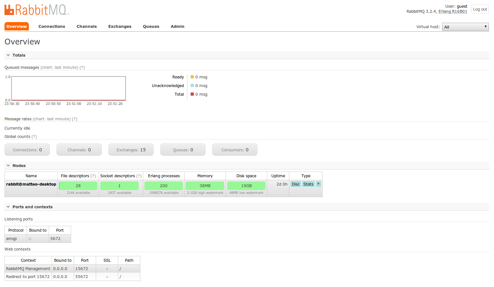

RabbitMQ

Un broker di messaggistica
Scritto in erlang
sistemi real-time high availability
telecoms, banking, e-commerce, computer telephony e instant messaging
supporto nativo per concorrenzialità, distribuzione e fault tolerance
Mantenuto da pivotal
Redis
Spring framework
Hadoop
usato da
indeed.com
telefonica
mozilla
Come installare RabbitMQ?
linux / debian
apt-get install rabbitmq-serverosx
brew install rabbitmqWindows?
there is an exe for that...
Perchè Rabbit?
è open source (MPL)
supporta il protocollo AMQP
è scalabile
bindings per molti linguaggi
php (amqplib-php)
ruby (bunny)
java (rabbitmq-java-client)
C#
perl
erlang
clojure
COBOL!
Perchè Rabbit?
performance
Nokia Real Time Traffic Maps
800.000 messaggi / minuto
Perchè Rabbit?
realtime is the new loud
api di instagram
Perchè Rabbit?
scalability is the new loud
aws
Perchè Rabbit?
multi-language is the new loud
php, python, ruby, node anyone?
AMQP
Advanced Message Queuing Protocol
Un layer applicativo standard aperto per middleware orientati ai messaggi
creato nel 2004 da John O'Hara (JPMorgan Chase)
in seguito adottatto come standard aperto da cisco, red hat, novell, microsoft, vmware
RabbitMQ implementa il protocollo AMQP nativamente
Altri protocolli come stomp, MQTT e http sono installabili via plugin
AMQP è la scelta più facile e migliore
Back to the rabbit
come funzionano i messaggi?
a day in the life of a message

rabbit (amqp) è:
Messaggi
Un messaggio non è altro che IL dato
è composto da un body e da un payload
alcuni headers utilizzati per convenzione
- Content type
- Content encoding
- Routing key
- Delivery mode (persistent or not)
- Message priority
- Message publishing timestamp
- Expiration period
- Publisher application id
producer
consumer
Exchange
Business logic dell'applicazione
Riceve i messaggi e li smista
Queue
coda di messaggi in attesa di essere gestiti da un consumer
in un certo senso un consumer è una coda
Virtual Host
1 rabbit = tanti rabbit
ambiente completamente isolato dove vivono le entità AMQP
non è programmabile
show me the code...

composer.json
{
"require": {
"videlalvaro/php-amqplib": "~2.2.6"
}
}
use PhpAmqpLib\Connection\AMQPConnection;
use PhpAmqpLib\Message\AMQPMessage;
$connection = new AMQPConnection('localhost', 5672, 'guest', 'guest');
$channel = $connection->channel();
// codice
$channel->close();
$connection->close();
// dichiaro una coda
$channel->queue_declare('hello');
// creo un messaggio
$msg = new AMQPMessage('Hello World!');
// pubblico
$channel->basic_publish($msg, '', 'hello');
/**
* declare queue, create if needed
*/
public function queue_declare($queue="", $passive=false, $durable=false,
$exclusive=false, $auto_delete=true,
$nowait=false, $arguments=null, $ticket=null) {}
/**
* publish a message
*/
public function basic_publish($msg, $exchange="", $routing_key="",
$mandatory=false, $immediate=false,
$ticket=null) {}
3 modelli principali di routing
direct
fanout
topic
direct exchange

use cases
test
piccoli setup (request offload)
producer
// dichiaro una coda
$channel->queue_declare('hello', false, false, false, false);
// creo un messaggio
$msg = new AMQPMessage('Hello World!');
// pubblico
$channel->basic_publish($msg, '', 'hello');
/** API REFERENCE **/
// declare queue, create if needed
public function queue_declare($queue="", $passive=false, $durable=false,
$exclusive=false, $auto_delete=true,
$nowait=false, $arguments=null, $ticket=null) {}
// publish a message
public function basic_publish($msg, $exchange="", $routing_key="",
$mandatory=false, $immediate=false,
$ticket=null) {}
consumer
// dichiaro una coda identica a quella di prima
$channel->queue_declare('hello', false, false, false, false);
$callback = function($msg) {
echo " [x] Received ", $msg->body, "\n";
};
$channel->basic_consume('hello', '', false, true, false, false, $callback);
while(count($channel->callbacks)) {
$channel->wait();
}
/** API REFERENCE **/
// start a queue consumer
public function basic_consume($queue="", $consumer_tag="", $no_local=false,
$no_ack=false, $exclusive=false, $nowait=false,
$callback=null, ...)
fanout
use cases
logging
dashboards in tempo reale
pub/sub
fanout setup
// prima avevamo un exchange senza nome e una routing key
$channel->basic_publish($msg, '', 'hello');
// creo un exchange
$channel->exchange_declare('logs', 'fanout', false, false, false);
// publico
$channel->basic_publish($msg, 'logs');
/** API REFERENCE **/
// declare exchange, create if needed
public function exchange_declare($exchange, $type, $passive=false,
$durable=false, $auto_delete=true, ...)
Code temporanee
il nome della coda è importante quando vuoi condividere l'informazione tra producer e consumer
questo non è il caso
list($queue_name, ,) = $channel->queue_declare("");
bindings

$channel->queue_bind($queue_name, 'logs');
log_receiver.php
$channel->exchange_declare('logs', 'fanout', false, false, false);
list($queue_name, ,) = $channel->queue_declare("", false, false, true, false);
$channel->queue_bind($queue_name, 'logs');
echo ' [*] Waiting for logs. To exit press CTRL+C', "\n";
$callback = function($msg){
echo ' [x] ', $msg->body, "\n";
};
$channel->basic_consume($queue_name, '', false, true, false, false, $callback);
while(count($channel->callbacks)) {
$channel->wait();
}
$channel->close();
$connection->close(); // la coda viene cancellata
topic

uno dei modelli più complessi
ideale per sistemi che fanno largo uso di messaggi
topic producer
// creo un exchange
$channel->exchange_declare('topic_logs', 'topic', false, false, false);
// publico
$msg = new AMQPMessage('test');
$channel->basic_publish($msg, 'topic_logs', 'server1.alert');
$channel->basic_publish($msg, 'topic_logs', 'server1.debug');
$channel->basic_publish($msg, 'topic_logs', 'server2.alert');
topic consumer
// creo un exchange uguale al precedente
$channel->exchange_declare("topic_logs", "topic", false, false, false);
list($server1Queue, ,) = $channel->queue_declare("", false, false, true, false);
$channel->queue_bind($server1Queue, 'topic_logs', 'server1.#');
list($alertQueue, ,) = $channel->queue_declare("", false, false, true, false);
$channel->queue_bind($alertQueue, 'topic_logs', '#.alert');
routing wildcards
*
esattamente una parola
#
zero o più parole
Message Acknowledgements (acks)
riduce le performance, ma è fondamentale per i messaggi importanti
cose da fare dopo aver installato rabbit
abilitare il management plugin
rabbitmq-plugins enable rabbitmq_management
http://localhost:15672/
RabbitMQSimulator
RabbitMQSimulator / RabbitMQSimulator
Cose che avrei voluto sapere prima di cominciare ad usare rabbit
aka
wtf moment
Un messaggio non viene MAI messo direttamente in una coda
questo romperebbe il principio secondo il quale il producer non sa se e quali consumer sono in ascolto
AMQP è un protocollo programmabile
la logica sta nell'applicazione, non nel server
non effettuare MAI il routing nei consumer
fair dispatch
i messaggi vengono assegnati immediatamente...appena arrivano
Non rimangono in attesa nell'exchanger
Symfony
videlalvaro / RabbitMqBundle
old_sound_rabbit_mq:
connections:
default:
host: %rabbit_host%
lazy: true
port: 5672
user: %rabbit_user%
password: %rabbit_password%
vhost: %rabbit_vhost%
producers:
entity:
connection: default
exchange_options:
name: entity
type: topic
consumers:
pdf_splitter:
connection: default
exchange_options: { name: entity, type: topic }
queue_options:
name: pdf_split
routing_keys:
- document_upload.created
qos_options: { prefetch_size: 0, prefetch_count: 1, global: false }
callback: vendor.rabbitmq.consumer.document.pdf_splitter
page_previewer:
connection: default
exchange_options: { name: entity, type: topic }
queue_options:
name: page_preview
routing_keys:
- document_page.created
qos_options: { prefetch_size: 0, prefetch_count: 1, global: false }
callback: vendor.rabbitmq.consumer.document.page_previewer
 matteosister
matteosister